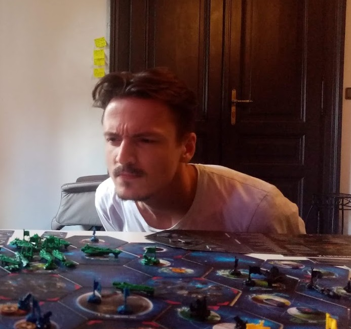
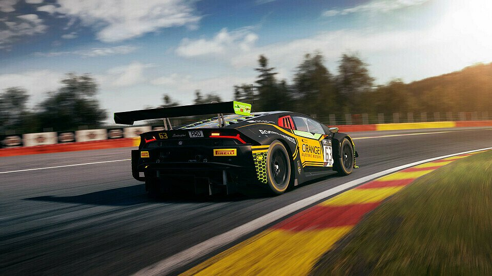

I'm René Kienauer, a game developer from Austria specializing in gameplay programming and design. With over five years of industry experience, I've contributed to diverse projects across multiple platforms and genres.
I excel at building robust multiplayer systems and gameplay features in C++ and Unreal Engine, with a focus on writing simple maintainable code.
Professional Journey
-
2025/01 - Present Unannounced Project / Freelance Game Development
Currently developing a first-person single-player RPG in Unreal Engine 5, while also contributing to select freelance game development projects.
-
2020/03-2024/09 Game Programmer - Strange Horizons
Created and shipped a multiplayer survival game in Unreal Engine 5.
-
2019/02-2019/12 Junior Game Programmer - d3t Limited
Helped port high-end UE4 racing simulation Assetto Corsa to PS4 and Xbox One.
-
2016-2018 Games Programming Diploma - SAE Institute Vienna
Learned the foundations of game development. Honed rapid prototyping skills and team collaboration through multiple game jams.
-
2010-2015 Higher Educational Institute for Electronics - Leonding Upper Austria
Specialization in Technical Computer Science. Final Test in Technical Informatics, Applied Mathematics and Telecommunications.
Professional Experience
Strange Horizons - Outerstellar
Duration: 4 Years (2020-2024)
Helped concept and create the fundamental systems needed for a multiplayer survival game together with another engineer.
- Development of optimized networked game systems for key gameplay features like Inventory, Deployables, Interaction, Abilities (GAS), Melee Combat, Animation and more
- Led implementation of the whole game's User Interface
- Developed multiple AI pawns utilizing custom Behavior Trees with shared behavior
- Optimized Navigation System to reduce generation time at editor and startup time
- Established Validation System and wrote lots of validation code
- Created custom Editor and Asset Generation Tools to increase productivity
- Analyzed game design and provided clear feedback for potential improvements
- Maintained and refactored the same code base for several years
Technologies used: C++, Unreal Engine 5, Perforce, AWS, TeamCity

d3t Limited - Assetto Corsa Competizione PS4 / XB1 Port
Duration: 1 Year (2019-2020)
Contributed to the console port of Assetto Corsa Competizione, a highly acclaimed racing simulation game known for its realistic physics and driving experience. Focused on performance optimization and console-specific features.
- Contributed to performance optimization for console versions
- Optimized memory usage to fit the game within console limitations
- Developed the XB1/PS4 User Management Layer
Technologies used: C++, Unreal Engine 4, Perforce, Console SDKs
Academic Projects
Animal Squad
A turn-based 1v1 multiplayer strategy game featuring unique animal characters with special abilities.
- Implemented networking using GameSparks Services
- Developed the hexagon grid system
- Created modular unit programming framwork for gameplay variety
Technologies: Unity, C#, GameSparks
Ultimate Parkour Challenge
A 3D platformer featuring advanced movement mechanics and challenging level design.
- Developed a complex character controller with various parkour moves
- Implemented a dynamic camera system
- Setup state machine based animation system for smooth character movement
Technologies: Unity, C#
Game Jams
Kitten Smack - Geek GameJam 2018
A sidescroller set in a surreal world. Players save a kitten by soundblasting it forward while avoiding dangerous creatures.
- Developed in 48 hours
- Collaborated with an artist, sound designer, and game designer
- Focused on programming while working with a dedicated game designer for the first time
- Incorporated sound library from the Polish Experimental Radio Station
Technologies: Unity, C#
Beat Piston - Global GameJam 2017
A rhythm infinite runner where players tap in sync with the beat while switching gears to dodge obstacles and survive.
- Developed in 48 hours
- Theme: Transmission
- Worked on gameplay mechanics and obstacle generation
- Collaborated with a sound designer for beat synchronization
Technologies: Unity, C#